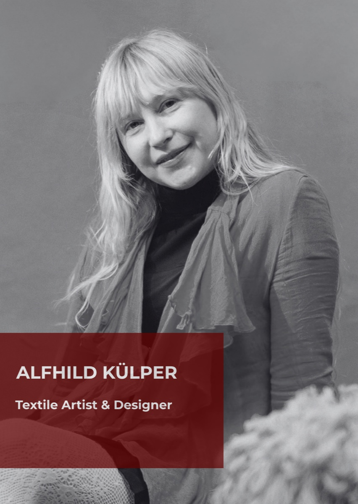

Alfhild Külper
Textile Artist & Designer
For Alfhild Külper, softness is more than a material quality — it is a way of seeing the world. The Swedish-born, Amsterdam-based artist transforms wool, memory and emotion into tactile landscapes that blur the boundaries between art and design. Working with leftover yarns and surplus wool, she gives forgotten materials new life, making sustainability part of her creative language. A former Head of Design at Viktor & Rolf, her work explores craft, human touch, comfort and connection.